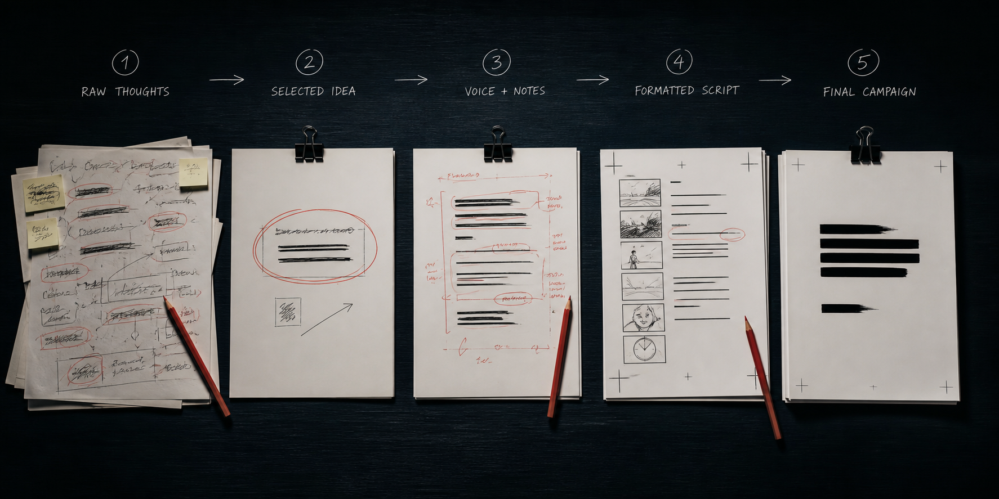

Website
Homepage headlineLess noise.
Less noise.
More meaning.
A clear promise, useful context and a next step that feels natural.
Discover the differenceMad Men Hatters · Writing · Content · Brand Voice
Whatever the idea and wherever it needs to travel, we find the words that make it clear, memorable and ready to inspire action.
Find your brand voiceA pen is mightier than a sword. We write for what happens next.
Why words matter
Words decide whether an idea is understood, remembered or ignored.
We find the sharpest truth, give it a distinctive voice and shape it for the moment where it needs to work.
Make the idea easier to understand without making it ordinary.
Give people something meaningful enough to feel and share.
Create a voice people can identify before they see the logo.
Turn attention into the next click, thought, conversation or choice.
What we write
We bring strategic thinking and an editorial eye to everything from a two-word headline to a two-thousand-word perspective.
Messaging, propositions, voice systems and thought leadership that define what the brand sounds like.
Website and search-aware writing that makes information useful, persuasive and easy to navigate.
Concepts, headlines and social copy with enough clarity to travel and enough character to be remembered.
Scripts and long-form stories built around rhythm, visual possibility and the way people actually listen.
From idea to expression
We question, shape and sharpen until every word feels inevitable—not because it was easy, but because the thinking is clear.

Find the truth beneath the assignment.
Choose the most meaningful way in.
Set the tone, rhythm and vocabulary.
Adapt the expression to its context.
Make every word earn its place.
One voice. Many formats.
Strong writing does not copy and paste. It understands how people read, listen and respond in every context.
Make every
word count.
A clear promise, useful context and a next step that feels natural.
Discover the differenceSix words. One clear idea.
OPEN ON: A blank page.
A cursor waits.
VO: The right word changes what happens next.
Visibility creates a moment. Connected thinking turns that moment into momentum.
6 min read ↗Short enough to open. Strong enough to continue.
Different rhythm. Different length. Same unmistakable voice.
Brand voice systems
We turn instinct into practical guidance so everyone writing for the brand can sound connected without sounding identical.
Clear enough to guide.
Flexible enough to sound alive.
Not one fixed tone. A recognisable character that responds intelligently to the moment.
The one thought people should remember.
The proof that makes the promise credible.
The context that makes it relevant.
Reusable structures help teams move faster without flattening the thinking.
Consistency is not saying the same thing. It is sounding like the same brand.
Selected writing work
From a campaign line to a complete digital voice, each expression is written for its role while staying true to the thought behind it.
A product truth turned into a campaign thought people could remember, repeat and enjoy.
Attention is a moment. Momentum is what happens when every moment strengthens the next.
Why Mad Men Hatters
We define what the writing must achieve before deciding how it should sound.
Language grows from the brand’s character—not the tone of the moment.
We write for how people read, watch, listen and respond.
Easy to follow. Difficult to forget.
Words inside the Madverse Collective
Mad Men Hatters can solve a focused writing challenge or join the right specialists around a larger brand and growth ambition.
Turn strategy and positioning into language people can understand and remember.
Give campaign ideas the headlines, scripts and copy systems that help them travel.
Make language and visual systems work together as one recognisable identity.
Write scripts and narrative structures shaped for film, motion and modern screens.
Build useful website journeys, interface copy and content around one clear voice.
Shape sharper messaging variations for testing, learning and measurable action.
Have an idea to sharpen, a
brand voice to define or
something worth saying?